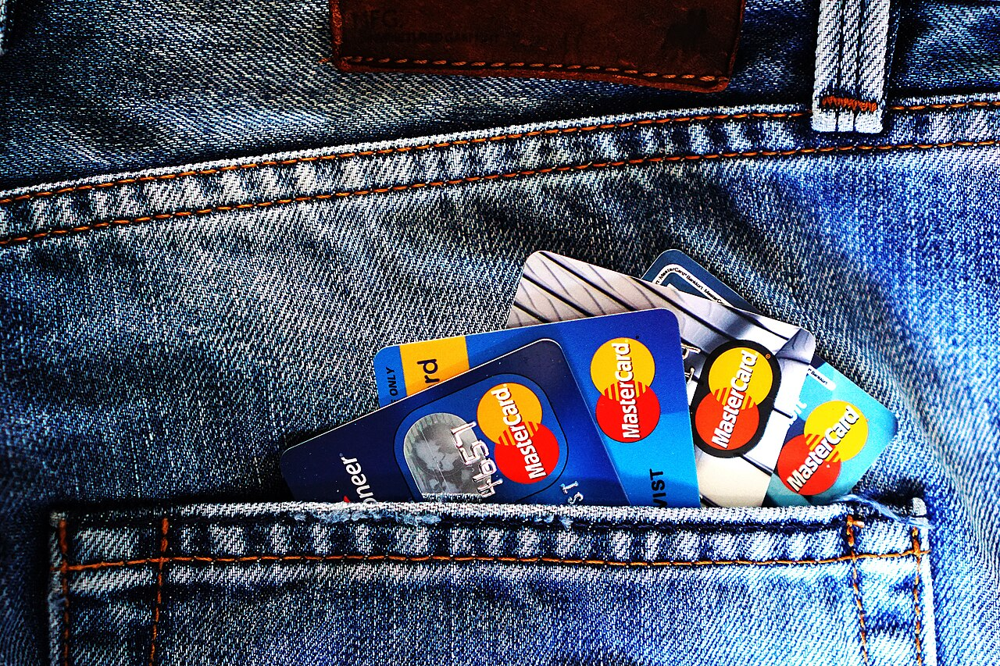

Thẻ tín dụng bị trừ phí thường niên: 3 việc kiểm tra trước khi đóng thẻ

Thẻ tín dụng bị trừ phí thường niên: 3 việc kiểm tra trước khi đóng thẻ: thẻ tín dụng bị trừ phí thường niên thường không phải giao dịch lạ: đó là khoản phí duy trì thẻ, ngân hàng thường trừ một lần mỗi năm, vào khoảng tháng mở thẻ. 3 việc kiểm tra dưới đây giúp bạn biết khoản phí đó có đúng không, có được miễn hay giảm không, rồi mới quyết định có nên đóng thẻ hay không.
Sáng nay mở app ngân hàng, bạn thấy thẻ tín dụng bị trừ một khoản tiền, nội dung ghi phí thường niên. Thẻ vẫn dùng bình thường, không mua gì lớn, khoản trừ này làm nhiều người giật mình tưởng thẻ bị trừ tiền lạ. Trước khi gọi tổng đài hay đóng thẻ, làm 3 việc dưới đây.
Cảnh báo an toàn trước khi làm gì
Phí thường niên khác giao dịch lạ: giao dịch lạ là khoản trừ mà bạn không nhận ra — số tiền lẻ, trừ nhiều lần trong ngày, người nhận không quen — thấy khoản trừ như vậy thì khóa thẻ ngay trên app và gọi tổng đài, không chờ làm 3 việc dưới đây. Phí thường niên chỉ trừ một lần mỗi năm, đúng một khoản, có ghi rõ tên phí trong sao kê. Không cung cấp mã OTP, mật khẩu hay số thẻ cho bất kỳ ai tự xưng là ngân hàng — ngân hàng thật không hỏi những thứ đó qua điện thoại hay tin nhắn. Chỉ làm việc qua app chính thức của ngân hàng hoặc số tổng đài in sau thẻ. Không đóng thẻ khi thẻ còn dư nợ trả góp hay dư nợ chưa thanh toán — tất toán xong mới đóng được.
1. Xem sao kê: khoản phí trừ khi nào, đúng mức phí đã ký không
Mở app ngân hàng, xem sao kê kỳ này — phí thường niên ghi rõ tên phí, ngày trừ và số tiền. So với biểu phí lúc mở thẻ, trong hợp đồng hoặc mục biểu phí trên app và website của ngân hàng: mỗi loại thẻ có một mức phí riêng, không có mức chung cho mọi thẻ. Phí trừ đúng khoảng tháng mở thẻ, đúng số tiền trong biểu phí thì khoản trừ là đúng. Phí trừ sai tháng, sai số tiền, hoặc trừ hai lần trong một năm thì chụp lại sao kê, giữ lại để hỏi ngân hàng ở việc 2. Sao kê trên app thường giữ lại nhiều kỳ — xem luôn kỳ trước để biết phí này năm ngoái trừ vào tháng nào, số tiền có giống năm nay không.

2. Hỏi ngân hàng có được miễn hay giảm phí không
Gọi tổng đài hoặc nhắn qua app của ngân hàng, hỏi rõ ba điều: khoản phí này có được miễn theo mức chi tiêu năm qua không, có chương trình giảm phí khi chi tiêu đủ một mức nào không, và có thể đổi sang loại thẻ không thu phí thường niên không. Nhiều ngân hàng miễn phí năm đầu, hoặc miễn phí khi chi tiêu cả năm đạt một mức nhất định — mức này khác nhau theo từng loại thẻ, hỏi đúng loại thẻ của mình mới có câu trả lời đúng. Hỏi xong ghi lại tên người trả lời, ngày giờ, và nội dung đã hẹn — nếu ngân hàng hẹn hoàn phí hay đổi loại thẻ thì có cái để đối chiếu sau.
3. So ưu đãi với mức phí: thẻ này còn đáng giữ không
Liệt kê ưu đãi thẻ đang có: hoàn tiền khi chi tiêu, tích điểm đổi quà, phòng chờ sân bay, bảo hiểm du lịch. Chỉ tính những ưu đãi mình thực sự dùng trong năm qua — hoàn tiền mà cả năm chỉ chi tiêu ít thì số tiền hoàn lại không đủ bù phí thường niên. Ưu đãi không dùng tới thì không tính vào, dù quảng cáo có hấp dẫn. So xong mà phí cao hơn giá trị ưu đãi thực dùng thì đóng thẻ là hợp lý; ưu đãi thực dùng cao hơn phí thì giữ thẻ — đóng thẻ xong điểm thưởng và ưu đãi gắn với thẻ cũng mất theo.
Giới hạn cần nhớ
Ba việc trên chỉ giúp quyết định có nên đóng thẻ vì phí thường niên — không áp dụng cho giao dịch lạ hay thẻ bị mất. Thấy giao dịch không nhận ra thì khóa thẻ ngay, không chờ làm 3 việc này. Đóng thẻ xong thì điểm thưởng, ưu đãi gắn với thẻ cũng mất theo, và thẻ còn trả góp thì phải tất toán trước. Muốn phân biệt phí thường niên với giao dịch lạ thì xem bài riêng: Ví điện tử bị trừ tiền lạ: 4 việc phải làm ngay trong giờ đầu tiên. Thẻ ATM bị cây ATM nuốt mất thì xem thêm: Thẻ ATM bị cây ATM nuốt mất: 4 việc làm ngay để lấy lại thẻ và giữ an toàn tiền trong tài khoản.
Kết lại: lần tới thấy thẻ tín dụng bị trừ phí thường niên, cứ nhớ 3 việc: xem sao kê đối chiếu biểu phí, hỏi ngân hàng có được miễn hay giảm không, so ưu đãi thực dùng với mức phí — làm xong 3 việc rồi mới quyết định đóng thẻ hay giữ thẻ.
- Muốn bài viết có thêm người hỏi mua? Xem các gói tăng tương tác tại viettuongtac.com.
- Cần một website bán hàng để khách xem mẫu và đặt hàng dễ hơn? Xem mẫu tại webkhoinguon.com.

💬 Bình luận
Đang tải bình luận…